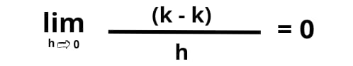
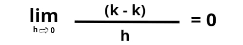

¿Sabías qué?
La derivada de una constante es cero.
¿Sabías cómo se expresa la derivada?
En la notación de Lagrange, la derivada de f se expresa como f′ (se pronuncia "f prima”). Esta notación es probablemente la más común cuando se trabaja con funciones de una variable.
Derivadas de una constante
La derivada de una constante siempre es igual a cero, independientemente del valor de la constante.
Función constante
Derivada de la función constante

Grafica de la derivada de la función constante
A la izquierda, una función constante. A la derecha, su derivada, que es cero. Recuerda que la pendiente de cualquier constante es 0 en cualquier punto, de ahí que su derivada, que representa la pendiente de la recta tangente, sea también 0.
La derivada de una constante es cero porque la representación gráfica de una función constante no tiene pendiente.
Ejemplo

Demostración
 

Cuando estudiemos en el nivel educativo experto el teorema del valor medio podremos utilizarlo para demostrar el caminio inverso, esto es, que si f'(x)=0 ⇒ f(x) es constante.